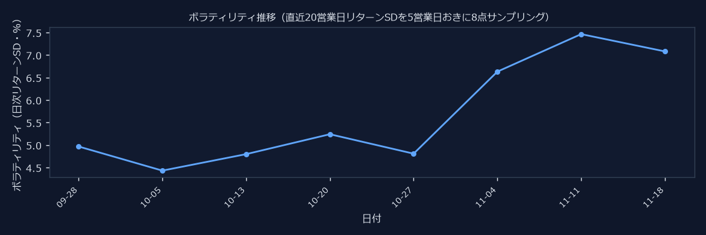
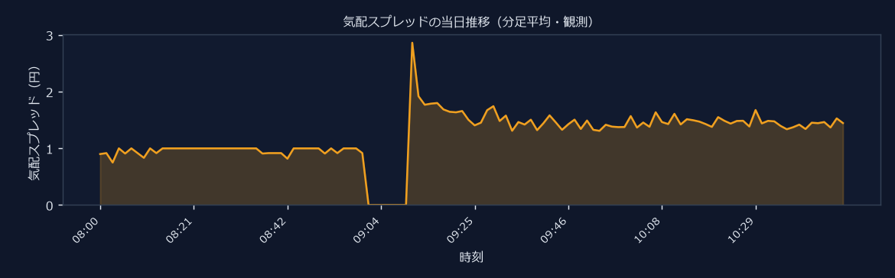
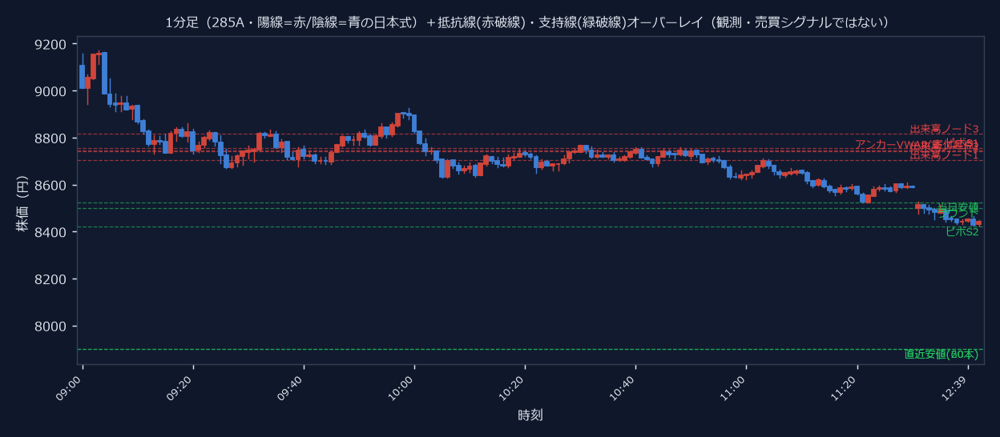
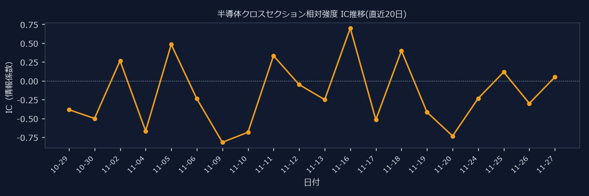
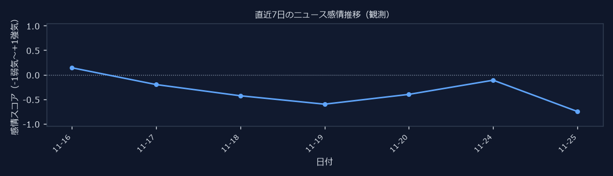
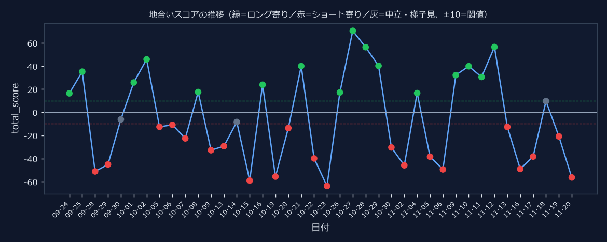

🤖 AI考察?【数値要約】は、モニターが観測している主要な指標（地合いスコア・285A・ピア・為替・需給・寄りの状態・予定など）の値を、元データのまま定型の文にして約10分ごとに更新する要約です（文章の自動生成はしていません）。
【Claude考察】は、平日の寄り前・寄り直後・前場引け前・大引け後（急変時は臨時）にClaude(AI)が書いた観測・状況整理で、書かれた時点を明記し、その後の数値は上の数値要約で更新しています。
無料公開データの観測情報であり、投資助言・売買推奨ではありません。更新の時点と周期は、下の「AI考察の予定」を参照してください。値動きへの反映にはタイムラグがあります。
値位置・時間外直近の終値 7,762円(前営業日比 +12.57%)｜時間外(東証最終値比) PTS +2.91%・DEX +2.39%
地合い・信用需給地合い -1(中立)｜信用倍率 24.10倍(11-25基準)｜空売り規制: 対象外
直近の予定11-27 子会社キオクシアからの配当2兆2,149億円を受領(11-25適時開示)・11-27 米国市場 短縮取引(感謝祭翌日・13:00 ET閉場)
直近変化（東証行の終値比は前営業日終値比、PTS・ADR・DEXは東証最終値比。最終約定から2時間超の行は薄グレー＝立会時間外）| 市場 | 最終値(円) | 終値比 | 5分 | 15分 | 1時間 | 最終約定 |
|---|
| 東証(時間外) | 7,762 | +12.57% | — | — | — | 11/26 15:30 |
| PTS(時間外) | 7,988 | +2.91% | — | — | — | 11/27 02:31 |
| 米国ADR(時間外) | 6,973 | — | — | — | — | 11/26 05:59 |
| DEX | 7,947 | +2.39% | -0.84% | -0.88% | -1.30% | 11/27 08:02 |
【数値要約｜08:00 更新】寄り前・前営業日(11-26)の終値を基準にした値
地合い: ショート寄り -20.8（前回 11-26 -15.4・前回比 -5.4）／主因=メモリピア -28.2pt・マクロ(SOX/円) +17.4pt
285A: 7,762円（直近営業日の前日比 +12.57%）・出来高倍率 0.93・日足のテクニカル判定=弱気（日をまたぐ中期の見方・上の地合いは今日の4軸の合成）・型=寄り底・終日上昇
ピア: メモリ 平均 +1.01%（最大変動 キオクシア +12.57%）／AIチップ/SOX 平均 -0.08%（最大変動 フィラデルフィア半導体指数 +7.32%）／日本の半導体製造装置関連 平均 +2.94%（最大変動 アドバンテスト +4.57%）
為替・先物: USDJPY -0.01%・米10年 4.85%・日経先物 前日比 +0.56%（現物前日終値比 +1.15%）
夜間PTS・ADR(東証最終値比): キオクシア PTS +2.23%／東京エレクトロン PTS +0.94%／レーザーテック PTS +0.52%／アドバンテスト PTS +1.41%／ディスコ PTS +0.92%
285Aの直近変化: 東証 立会時間外のため直近変化は出さない（最終値 7,762円・11/26 15:30）（11/26 15:30時点）／PTS 立会時間外のため直近変化は出さない（最終値 7,935円・11/27 00:33）（11/27 00:33時点）／ADR 立会時間外のため直近変化は出さない（最終値 6,973円・11/26 05:59）（11/26 05:59時点）
DEX(24時間取引・東証最終値比): 285A +2.56%（11/27 08:00時点）／直近変化 5分 -0.67%・15分 -0.71%・1時間 -1.13%・3時間 -0.70%
変化の読み: DEX: 下落が加速(5分 -0.67%は1時間 -1.13%のペースより速い)／直近3時間の安値圏
変化の読み: 東証：最終約定から2時間超のため、直近変化・変化の読みには含めない(最終 11/26 15:30・立会時間外)
変化の読み: PTS：最終約定から2時間超のため、直近変化・変化の読みには含めない(最終 11/27 00:33・立会時間外)
変化の読み: 米国ADR：最終約定から2時間超のため、直近変化・変化の読みには含めない(最終 11/26 05:59・立会時間外)
変化の読み: 東証最終値比の水準: PTS +2.23%・DEX +2.56%→いずれも東証最終値より上＝次の寄り付きが終値より高く始まる場合の水準感を示す材料(予告ではない)
需給: 信用倍率 24.10（11-25基準・前営業日比 +56.1%）
寄り: 直近記録日11-26は寄り不完全（遅れ11銘柄・285Aの最初の約定 09:06:01）・費用倍率 直前営業日321.1倍・直近平均255.1倍（往復費用 2.76bp・分割前水準の実測／分割後の試算(暫定) 2.43bp）
変化点: 前回から大きな変化なし
予定: 11-27 子会社キオクシアからの配当2兆2,149億円を受領(11-25適時開示)・11-27 米国市場 短縮取引(感謝祭翌日・13:00 ET閉場)・11-30 TOPIX 浮動株比率の第2段階(0.325→0.5・11月最終営業日に適用)・12-04 転換社債の株式転換(SKハイニックス系SPC・完了予定・約14.1%)（日程は未確定）・12-04 米雇用統計(11月分)・12-09 FOMC(12月会合・SEP回・声明は米12-09 14:00 ET=日本時間12-10 04:00)・12-10 米CPI(11月分)・12-11 メジャーSQ(12月限・SQ算出日)（日程は未確定）
【Claude考察｜11-26 16:37 時点（大引け後）】※無料公開データを機械的に集計した観測情報であり、投資助言・売買推奨ではありません。（11-26 大引け後の整理・16:36時点）
■ 本日の285A
285Aの本日の終値は7,762円で、前営業日（11-25）の終値6,895円と比べて+12.57%でした。寄りは09:00に約定がなく09:06:01と遅れ、寄り値は7,210円でした。その後09:17に高値7,895円、09:06に安値7,208円をつけ、終値は高値より133円下、安値より554円上で引けました。終値7,762円は、S2 6,528円・S1 6,712円・前営業日の終値6,895円・R1 7,120円・前営業日の高値7,130円・R2 7,344円のいずれも上回る位置です。空売り価格規制は、285Aが11-25に前営業日の終値比-14.18%で引けたため、東証の規則どおりなら11-26が対象の最終日で、翌営業日の11-27は対象外になります（今日は前営業日の終値6,895円を下回って10%以上下げる動きがなく、新たな発動の条件には当たりません）。適用の有無は取引所の発表で確認が必要です。24時間取引のDEXは11-26 16:36時点で7,802円（円換算）で、東証の確定終値7,762円比+0.51%です。これらは値位置の記述であり、この先の値動きを示すものではありません。
■ 地合いスコア：ショート寄り（約-16）
地合いスコアは約-16（ショート寄り）です。内訳は、メモリピアが約-28pt、マクロ（SOX・為替）が約+17pt、ニュース温度が約-5pt、キオクシア固有のイベントは0ptです。メモリピア軸の構成銘柄（マイクロン・サンディスク・SKハイニックス・サムスン電子の4社）のうち、米国の2社は11-25引けでマイクロン-4.53%、サンディスク-5.57%。韓国の2社はSKハイニックス+2.23%、サムスン電子+0.35%（日足の確定値）です。
■ 日本の装置株は全体に上昇
日本の半導体製造装置関連の本日の確定終値の前日終値比は、東京エレクトロン+0.59%、SCREEN+1.12%、KOKUSAI ELECTRIC+3.20%、ディスコ+3.97%、レーザーテック+4.18%、アドバンテスト+4.57%でした（平均+2.94%）。一方、直近の米国市場（11-25引け）ではフィラデルフィア半導体指数が前日終値比-0.65%でした。
■ 直近の出来事：キオクシアの直近の値動き
285Aは11-20が前営業日比-11.66%（終値7,307円）、11-24が+9.95%（終値8,034円）、11-25が-14.18%（終値6,895円）、11-26が+12.57%（終値7,762円）で引けました。寄り付きは11-20が09:11:53、11-24が09:10:53、11-25が09:18:02、11-26が09:06:01と、いずれも09:00より遅れました。キオクシアホールディングスは11-25に、連結子会社のキオクシアから2兆2,149億円の配当金を受領すると適時開示で発表しています（受領日は11-27付と報じられています）。
■ 需給と今後の予定
キオクシア（285A）の信用倍率は11-25基準で24.10倍（1つ前の11-24基準は15.44倍）です。今後は11-27に子会社キオクシアからの配当2兆2,149億円を受領(11-25適時開示)、11-30にTOPIX 浮動株比率の第2段階(0.325→0.5・11月最終営業日に適用)、12-04に転換社債の株式転換(SKハイニックス系SPC・完了予定・約14.1%)（日程は未確定）、12-04に米雇用統計(11月分)、12-09に米FOMC（米国時間）、12-10に米CPI(11月分)、12-11にメジャーSQ(12月限・SQ算出日)（日程は未確定）が予定されています。以上は将来の値動きを示すものではありません。
※この考察は15時間25分前のものです。以降の数値は上の数値要約で更新しています。
根拠データの時点（公開ページ生成時の取得時点）: 価格 08:02／マクロ 08:02／ニュース 08:02／掲示板 07:37／地合い 08:02
AI考察の予定平日の立会日に、寄り前 08:50／寄り直後 09:10／前場引け前 11:30／大引け後 15:45 の4時点で考察を更新します（考察はClaude(AI)が書きます）。
土日祝などの休場日は考察を書きません。
時点の間は、数値のみを約10分ごとに更新します（文章は次の時点まで更新されません）。
次の予定: 11-27 08:50（寄り前）／直近の更新: 11-26 16:37（大引け後）
寄り直後の確認帯（観測のみ）?寄り直後に見たい既存の観測（寄りのデータ完全性・費用倍率・実測スプレッド・信用倍率の前営業日比）を1か所に集め、各項目にOK/注意のラベルと理由を付けたものです。閾値は目安で、観測のみ・売買シグナルではありません（見送りや停止の判断には使いません）。
あわせて、寄り方向採点の直近の的中率と加重平均損益（損益合計÷投入合計・n<30は参考表示）を併記します。
寄り遅れ日（11-26・最初の約定 09:06）
寄り値＝最初の約定の価格（7,210円・前営業日終値比 +4.57%）。寄り前の気配とは別の値です。
寄り前の最終気配（08:59:56時点の板の売り買い気配の中央値 7,236円・前営業日終値比 +4.94%）と寄り値の差は -0.37pt。
判定＝285Aの最初の約定が 09:00 から3分以上遅れた日（観測のみ・原因の断定はしません）。
注意: 信用倍率が急変(+56.1%)
参考寄りの完全性直近記録日(2026-11-26)の値: 寄り不完全: 遅れ11銘柄(全50中)・285Aの最初の約定 09:06:01(基準は09:01:00まで)
OK費用倍率(値幅÷往復費用)直前営業日2026-11-26の値幅は費用の321.1倍・直近5日平均255.1倍(費用2.76bp)｜※費用は株式分割(2026-09-29)前の水準での板ウォーク実測／分割後の試算(暫定) 2.43bp。過去の値幅であり予測ではありません
参考実測スプレッド(285A・中央値)直近記録日(2026-11-26)の値: 中央値 1.4bp(90%点 2.7bp)(目安4bp以上で注意)
注意信用倍率(285A・前営業日比)急変: 信用倍率 24.10(2026-11-25)・前営業日(2026-11-24) 15.44比 +56.1%(±10%以上)
目安・観測のみ・売買シグナルではありません(寄りの状態を一目で確認するための表示で、見送りや停止の判断には使いません)。
寄り方向採点 直近30件: 的中24件（80%）／損益列なし
観測のみ。10〜20営業日ためて人が判断します（1日・少数件で断定しません）。
寄り前気配・板の厚み（実測・観測）?08:00〜09:00に記録した寄り前の気配値・注文の厚みです。リアルタイム配信ではなく、記録された時点の観測を後から表示しています。板の厚みは寄り方向の予測・採点には一切使っていません（参考表示のみ）。売買シグナルではなく、最終判断は人。
記録された寄り前の気配値（寄り付き前の売り気配・買い気配の中値）です。実際の寄り付き値そのものではなく、寄り付き前の見込みという点に注意してください。
対象営業日の板｜気配時点 11-27 08:02
| 寄り前気配（中値） | 7,999.5 |
| 前日終値 | 7,762.0 |
| 気配ギャップ | +3.06% |
| 板優勢 | 買い優勢 |
見方: 気配ギャップ＝想定される寄り付き値の前日終値比。板優勢＝買い注文(下値支持)と売り注文(上値抵抗)のどちらが厚いかの目安（拮抗＝どちらでもない）。売買シグナルではなく、最終判断は人。
寄り前の板に並んでいる注文の量（株数）です。買い注文が多いほど下値が支えられやすく、売り注文が多いほど上値が重くなりやすいという目安です。
| 買い注文（板の厚み） | 101,300 |
| 売り注文（板の厚み） | 106,300 |
| 買い成行超過 | 481,500 |
| 売り成行超過 | 351,000 |
| 板優勢 | 拮抗 |
売買シグナルではなく、寄り方向の採点にも一切使っていない参考表示です。
支持線・抵抗線（285A・日足テクニカル）?過去データから機械的に算出した価格の目安です。
・ピボットP＝前日の高値・安値・終値の平均から出す基準線。R1/R2＝Pより上の目安（R1が近く、R2はより遠い上値の壁）。S1/S2＝Pより下の目安（S1が近く、S2はより遠い下値の壁）。
・フィボ38.2%/50%/61.8%＝直近の高値→安値の値幅を黄金比で区切った「戻り」の目安。数字が大きいほど深い戻り。
・ラウンド＝54,460円なら55,000円のような、心理的にキリが良く売買が集中しやすい株価。
・直近高値/安値(20本・60本・120本)＝それぞれ直近20/60/120営業日の日足で一番高かった/安かった値段（期間が長いほどより大きな節目）。
・当日高値/当日安値＝今日ここまでの日足の高値・安値（別パネル「当日節目」の値と同じ考え方で、こちらは他のテクニカル水準と同じ表の中で扱う）。寄り前など今日の日足がまだ無い時は、ピボット・前日終値・高安とも直近の確定足（前営業日）を基準にし、名称も「前営業日高値/前営業日安値」になります。
・MA25/MA75＝25日/75日の単純移動平均線。現在値がその上にあれば下値支持、下にあれば上値抵抗の候補として自動的に振り分けています。
・ボリンジャー上限/下限(20,2σ)＝直近20営業日の終値の平均±標準偏差2倍の帯。通常はこの範囲に収まりやすいという目安（ATRの想定変動幅と近い発想ですが、値動きの大きさでなく終値の分布を使う別の計算方法です）。
・ギャップ上端/下端＝前日と当日の高安が重ならず値段が飛んだ「窓」のうち、まだ値動きで埋まっていない価格帯の上端・下端。急騰・急落の後にできやすく、後日そこまで値が戻ると「窓埋め」と呼ばれ意識されやすい水準です。埋まり具合(%)は本文下に別途表示します。
・ATR(Average True Range)＝1日の値動きの大きさの平均。想定変動幅＝現在値±ATR×1.5で「通常はこの範囲に収まりやすい」という目安の帯。
・上値抵抗/下値支持の表は、以上すべての水準を候補として現在値に近い5件を選んだ上で、価格が高い順に並べています（候補の種類が増えても表示件数は5件のまま増やしていません）。
現在値の下のバッジ
・トレンドレジーム(UP/DOWN/レンジ)＝終値が20日移動平均線の上下どちらにあり、その移動平均線自体が上昇/下降しているかの市場構造の記述。
・直近高値比＝直近60営業日の高値から現在値が何%乖離しているか。
・出来高＝直近20営業日平均出来高との倍率。
・分割まで＝株式分割(1株→3株)は2026-09-29に実施済み。実施前のみ、効力発生日までの日数と分割後換算価格を表示します。
売買シグナルではなく、最終判断は人・1日で断定しない。
52週レンジ位置: 14%（高 37,503／安 2,780）
トレンドレジームは今の値動きが上昇基調(UP)・下降基調(DOWN)・横ばい(レンジ)のどれに近いか。直近高値比は直近60営業日の最高値から現在値が何%下がっているか。出来高は普段(直近20営業日平均)と比べて売買がどれだけ活発か（1.0倍が普段どおり）。キオクシアの株式分割(1株→3株)は2026-09-29に実施済みです。「分割まで」は実施前のみ、効力発生日までの日数と換算価格を表示します。
📉 DOWNレジーム直近高値比 -61.8%出来高 0.9倍出来高(確定済直近日) 0.9倍 通常大変動確率(観測) 93%(high)
現在値 7,762.0｜前日終値 7,762.0（寄り前: 基準日 2026-11-26）｜想定変動幅(ATR×1.5) 6,165.0 〜 9,359.0
| 上値抵抗（価格が高い順） |
|---|
| ピボR1 | 8,035.7 | +3.53% | +0.51SD |
| ラウンド | 8,000.0 | +3.07% | +0.44SD |
| 前営業日高値 | 7,895.0 | +1.71% | +0.25SD |
| 出来高ノード1 | 7,877.8 | +1.49% | +0.22SD |
| 出来高ノード3 | 7,774.8 | +0.16% | +0.02SD |
| 下値支持（価格が高い順） |
|---|
| 前日終値 | 7,762.0 | +0.00% | +0.00SD |
| アンカーVWAP(寄付起点) | 7,756.2 | -0.08% | -0.01SD |
| 出来高ノード2 | 7,740.4 | -0.28% | -0.04SD |
| ピボP | 7,621.3 | -1.81% | -0.26SD |
| ラウンド | 7,500.0 | -3.38% | -0.49SD |
ピボット/フィボナッチ/当日高安/直近20・60・120営業日高安/移動平均線(MA25・75)/ボリンジャーバンド(20,2σ)/ラウンドナンバー/未埋めギャップから機械的に算出した参考の目安（現在値に近い順で選定）。売買シグナルではない。最終判断は人・1日で断定しない。｜285Aの日次リターンSD(2026-06-26以降・記録注意期間除外)＝6.92%/日。SD単位は普段の1日の値動きの何倍離れているかの目安。
未埋めギャップ 5件（直近: 2026-11-26(上) 7,161.0〜7,207.0・0%埋 他4件）
ボラティリティ推移（直近20営業日リターンSDを5営業日おきに8点サンプリング）

本日の値動きの型（ローソク足パターン・観測）: 該当パターンなし
ダイバージェンス（日足・価格とRSIの逆行・観測）: 強気(下げ渋り)
形状・逆行の機械的な検出であり、いずれも売買シグナルではない。
「往復実効費用」とは、株を買ってから売るまでに実質的にかかるコスト（買値と売値の差＝スプレッド等）のことです。今日の値動きの大きさが、このコストの何倍あったかを見ると「動いた分がコストで消えていないか」が分かります。
往復実効費用との比較（観測）本日の値動き 1,257.4bp ＝ 往復実効費用 2.76bp（板ウォーク実測）（分割前水準・再測定済の試算は下記） の
455.6倍見方: 緑(2倍以上)＝値動きが費用を明確に上回る／橙(1〜2倍)＝費用に埋もれやすい／赤(1倍未満)＝費用が値動きを上回る。
※分割後の再測定（確定）：分割（2026-09-29）後の板の気配から往復の実質コストを試算すると 2.43bp（40日分・前提=板の気配の差から往復コストを推定）。上の分割前の値は参考です。
この試算費用で見ると、本日の値動きは費用の 518.2倍（確定）です。
「指値注文」とは、買いたい・売りたい値段を自分で指定して出す注文のことです（成行注文はその時の市場価格ですぐ約定しますが、指値はその価格に達するまで待つ注文です）。この表は、その指値注文が実際にどれくらいの割合で成立し（約定率）、成立までに何秒かかったか（約定まで）を銘柄ごとに集計したものです。
指値執行の質（観測・売買シグナルでない）| 銘柄 | 約定率 | 約定まで(中央) |
|---|
| 285A | 100.0% | 0.1秒 |
| 6146 | 83.3% | 6.8秒 |
| 6920 | 87.5% | 2.5秒 |
| 8035 | 100.0% | 0.1秒 |
見方: 緑(80%以上)＝指値が機能しやすい／橙(50〜80%)／赤(50%未満)＝約定しにくい。
執行環境の記述であり売買シグナルではない。pret30s_bpは観測/MDE=50%でまだ検出圏外のため使用しない
テクニカル総合判定（285A）?価格・出来高そのものから見た複合判定です。上の「今日のバイアス」（マクロ/同業ピア/キオクシア固有イベント/ニュース由来の複合）とは別の観点で、こちらは日足のテクニカル指標16種(移動平均・MACD・ADX/DI・スーパートレンド・パラボリックSAR・一目雲・RSI・ストキャス・CCI・Williams%R・ボリンジャー%b・OBV傾き・CMF・MFI)を等加重で合議した5段階判定です。両者が同じ方向を向いていれば材料と値動きが揃っている目安です。
MTFマトリックス＝短期(5営業日束ね)/中期(20営業日束ね)/長期(60営業日束ね)の疑似的な3スパンで同じ16指標がどちらを向いているかの一覧。285Aは上場から日が浅く長期側は本数不足で「データ不足」になることがあります。
等加重の記述的集約であり、売買判断・将来予測を保証しません。
価格・出来高そのものから見た複合判定です。上の「今日のバイアス」（マクロ/同業ピア/キオクシア固有イベント/ニュース由来の複合）とは別の観点で、こちらは日足のテクニカル指標16種を等加重で合議した5段階判定です。
弱気（スコア-5） 強気3・弱気8・中立5（算出できた指標 16/16）
| 指標 | サイン | 値 |
|---|
| 25日vs75日線 | 🔴 | -4733.987 |
| 5日vs25日(GC/DC) | 🔴 | -2515.36 |
| ADX/DI方向 | 🔴 | 35.148 |
| CCI(20) | ⚪ | -75.874 |
| CMF(20) | 🔴 | -0.1 |
| MACDヒスト | 🟢 | 61.661 |
| MFI(14) | ⚪ | 58.456 |
| OBV傾き(5本) | 🟢 | 169635800.0 |
| RSI(14) | ⚪ | 35.515 |
| Williams%R | ⚪ | -69.068 |
| ストキャス | 🟢 | 18.024 |
| スーパートレンド | 🔴 | -1 |
| パラボリックSAR | 🔴 | 9217.778 |
| ボリンジャー%b | ⚪ | 0.3 |
| 一目雲位置 | 🔴 | 7762.0 |
| 価格vs25日線 | 🔴 | 7762.0 |
🟢強気／🔴弱気／⚪中立／—データ不足。等加重の記述的集約であり、売買判断・将来予測を保証しません。
MTFマトリックス（複数スパンの一致度）
| スパン別スコア | 短期(5営業日足換算) | 中期(20営業日足換算) | 長期(60営業日足換算) |
|---|
| 合成スコア | 弱気(-5) | やや弱気(-3) | 中立(+0) |
| 指標 | 短期(5営業日足換算) | 中期(20営業日足換算) | 長期(60営業日足換算) |
|---|
| 価格vs25日線 | 🔴 | — | — |
| 25日vs75日線 | — | — | — |
| 5日vs25日(GC/DC) | 🔴 | — | — |
| MACDヒスト | 🔴 | — | — |
| ADX/DI方向 | 🔴 | — | — |
| スーパートレンド | 🔴 | 🔴 | — |
| パラボリックSAR | 🔴 | 🔴 | 🟢 |
| 一目雲位置 | — | — | — |
| RSI(14) | ⚪ | — | — |
| ストキャス | 🟢 | — | — |
| CCI(20) | 🟢 | — | — |
| Williams%R | 🟢 | — | — |
| ボリンジャー%b | ⚪ | — | — |
| OBV傾き(5本) | 🔴 | 🔴 | 🔴 |
| CMF(20) | 🔴 | — | — |
| MFI(14) | ⚪ | — | — |
データ制約により読み替え: 本来のデイ(分足)/スイング(日足)/中期(週足)の代わりに、日足を5営業日/20営業日/60営業日ごとに1本へ束ねた疑似的な3スパンで指標の一致度を見る。上場間もない銘柄は長期側の本数が不足し「データ不足」に劣化する。
板の需給圧力・気配スプレッド（285A・観測）?寄り前の板(気配)に積まれている買い注文・売り注文の量から需給の傾きを見る観測と、気配スプレッド(売り気配-買い気配)の当日推移です。over_sell_qty/under_buy_qty等は東証の板寄せ(特別気配)特有の集計値のため、観測できる時間帯は寄り前〜寄り付き直後に限られます（それ以降データが無いのは欠損ではありません）。
観測・記述であり売買シグナルではない。
寄り前の板(気配)に積まれている買い注文・売り注文の量から、需給がどちらに傾いているかを見る観測です。東証の板寄せ(特別気配)の仕組み上、この集計値が配信されるのは寄り前〜寄り付き直後の時間帯に限られます。
板の需給圧力（2026-11-27・08:00〜08:02）:
買い優勢（直近:
買い優勢）
買い優勢 95.8% 売り優勢 0.0% 拮抗 4.2% 平均気配スプレッド 0.9円
n=24件。観測・記述であり売買シグナルではない。
気配スプレッドの当日推移（分足平均・観測）: 直近 0.9円 平均 1.5円

アナリスト目標株価コンセンサス（285A）?外部アナリストの目標株価(平均・高値・安値・中央値)とその人数・推奨度をyfinanceから取得したものです。当サイトの判定ではありません。
最終判断は人・1日で断定しない。
アナリスト目標株価コンセンサス（16名・yfinance）: 平均
33,765（高 52,000／安 15,600／中央 33,750） 現在値比
+335.0% 推奨 buy
評価の人数内訳（人）
| 時点 | 強気買い | 買い | 中立 | 売り | 強気売り | 計 |
|---|
| 最新 | 6 | 9 | 0 | 0 | 1 | 16 |
| 1か月前 | 6 | 9 | 0 | 0 | 1 | 16 |
| 2か月前 | 6 | 9 | 0 | 0 | 1 | 16 |
| 3か月前 | 6 | 9 | 0 | 0 | 1 | 16 |
外部アナリストの目標株価の集計であり、当サイトの判定ではありません。証券会社ごとの目標株価は無料の公開データに無いため、評価の人数の内訳と直近3か月の推移を表示しています。
1分足チャート（285A・支持線/抵抗線オーバーレイ）?285Aのティック(約定)データを1分足のローソク足に集計したチャートです（日本式の配色＝陽線(始値比プラス)=赤／陰線(始値比マイナス)=青）。上のパネルで算出した支持線(緑破線)・抵抗線(赤破線)の水準を重ねて表示します。当日ティックの記録が必要なため、記録が無い時間帯（休場日・場が開く前など）は「1分足データなし（記録待ち）」と表示されます。観測・記述であり売買シグナルではなく、最終判断は人・1日で断定しない。

出来高プロファイル/アンカーVWAP(寄付起点)の水準は上の「支持線・抵抗線」表の候補にも混ざります(観測データがある時のみ)。
当日節目・VWAP押し目シグナル（285A・観測）?当日の始値・高値・安値・前日終値・心理節目からの「今日の節目」一覧と、現在値がVWAP（出来高加重平均価格）に対してどの状態にあるかを示します。ティック記録が必要なため、リアルタイムで動けない時は直近の引け時点で記録した値を表示します（その場合はその旨を明記）。売買シグナルではなく、最終判断は人・1日で断定しない。
当日の始値・高値・安値・前日終値・心理的な節目（キリの良い株価）を現在値に近い順に並べた「今日の節目」の一覧です。
現在値 7,762.0｜直近上値抵抗 心理節目 7,800｜直近下値支持 心理節目 7,700
| 節目 | 価格 | 現在値比 |
|---|
| 心理節目 7,800 | 7,800.0 | +0.49% |
| 心理節目 7,700 | 7,700.0 | -0.80% |
| 本日高値 | 7,895.0 | +1.71% |
| 心理節目 7,900 | 7,900.0 | +1.78% |
| 心理節目 7,600 | 7,600.0 | -2.09% |
| 心理節目 8,000 | 8,000.0 | +3.07% |
| 本日始値 | 7,210.0 | -7.11% |
| 本日安値 | 7,208.0 | -7.14% |
| 前日終値 | 6,895.0 | -11.17% |
VWAP押し目シグナル: VWAP近辺(押し目水準)｜参考(観察専用・売買指示ではない): 2026-06-08+06-09の2営業日のみの実測で「価格がVWAPを0.15%上抜け→VWAPまで0.15%以内に押して反発」を拾うと勝率59%・スプレッド込み合計+274,000円（出典: 株取引API_プロト1 vwap_support_backtest.py・開発引き継ぎ資料）。母数はわずか2日でありまだ結論できない。10〜20営業日の追加検証が必要。213A/2837等の薄商い銘柄では同条件で逆に負けており、流動性のある285A固有の傾向の可能性がある。
本日のチャートの型（285A・観測）?その日の値動きの形を、寄り30分での高安の決まり方と終値の位置から6パターン(A〜F)に機械的に分類したものです。
A 寄り天・終日下落＝寄り30分で高値を付け安値圏で引ける／B 寄り底・終日上昇＝寄り30分で安値を付け高値圏で引ける／C 寄り天だが戻す（往復）＝寄りで高値だが下げきらず戻す／D 寄り底だが落とす（往復）＝寄りで安値だが上げきらず落とす／E 終日レンジ＝値幅が小さく動かない日／F 日中で天底（後場転換型）＝高値も安値も寄り30分より後（上記いずれにも当たらない）。
「戻す」「落とす」はどちらも同じ考え方＝安値・高値からいったん反対方向へ動いた後、その動きを維持できず元の方向へ切り返すことです。C型（寄り天だが戻す）＝高値を付けた後、下げきらずに上へ戻る。D型（寄り底だが落とす）＝安値を付けた後、上げきらずに下へ落ちる。方向が逆なだけの対称的な動きです。
場中は終値がまだ確定していないため「暫定」と表示され、時間の経過とともに変わることがあります。閾値（寄り30分／終値位置0.35・0.65／値幅3.0%）は285Aの初期49営業日（発見標本）から決めた暫定値で、他銘柄・他期間では調整が必要です。観測・記述であり売買シグナルではなく、最終判断は人・1日で断定しない。
2026-11-26の型（確定）:
B（寄り底・終日上昇）
| 高値時刻 | 09:17 |
| 安値時刻 | 09:06 |
| 終値位置(0=安値引け・1=高値引け) | 0.81 |
| 日中値幅% | 9.53% |
| 寄りギャップ% | +4.57% |
2026-11-26引け確定（台帳記録）
直近6日の型の推移:
11/18:C（寄り天だが戻す（往復）） 11/19:B（寄り底・終日上昇） 11/20:A（寄り天・終日下落） 11/24:B（寄り底・終日上昇） 11/25:C（寄り天だが戻す（往復）） 11/26:B（寄り底・終日上昇）
📊 本日の型はB型（寄り底・終日上昇）です。過去101営業日中B型は25回（24.8%）観測されています。
過去の出現頻度をそのまま記述したものであり、次にこうなるという予測ではありません。
直近101営業日の型の内訳です。
| 型 | 日数 | 割合 |
|---|
| A（寄り天・終日下落） | 33 | 32.7% |
| B（寄り底・終日上昇） | 25 | 24.8% |
| C（寄り天だが戻す（往復）） | 14 | 13.9% |
| D（寄り底だが落とす（往復）） | 8 | 7.9% |
| E（終日レンジ（値幅小）） | 1 | 1.0% |
| F（日中で天底（後場転換型）） | 20 | 19.8% |
型の見方（A〜F）:
| 型 | 意味 |
|---|
| A（寄り天・終日下落） | 寄り30分で高値を付け、その後は戻せずに安値圏で引ける（終日下落）。 |
| B（寄り底・終日上昇） | 寄り30分で安値を付け、その後は下げずに高値圏で引ける（終日上昇）。 |
| C（寄り天だが戻す（往復）） | 寄り30分で高値を付けた後、下げきらずに上へ戻る（切り返す）＝往復型。 |
| D（寄り底だが落とす（往復）） | 寄り30分で安値を付けた後、上げきらずに下へ落ちる（切り返す）＝往復型。 |
| E（終日レンジ（値幅小）） | 高値・安値とも寄り30分より後だが、値幅自体が小さく方向感が乏しい。 |
| F（日中で天底（後場転換型）） | 高値・安値とも寄り30分より後で、値幅も小さくない＝日中で流れが転換した日。 |
「戻す」「落とす」はどちらも同じ考え方＝安値・高値からいったん反対方向へ動いた後、その動きを維持できず元の方向へ切り返すことです。C型（寄り天だが戻す）＝高値を付けた後、下げきらずに上へ戻る（切り返す）。D型（寄り底だが落とす）＝安値を付けた後、上げきらずに下へ落ちる（切り返す）。方向が逆なだけの対称的な動きです。
閾値（寄り30分／終値位置0.35・0.65／値幅3.0%）は285Aの49営業日から決めた暫定値です。他銘柄・他期間では再調整が要ります。
セクター概況?AIセクター全体(メモリ/AIチップ/日本SPE計15銘柄)のうち何銘柄が値上がりしているか(値上がり銘柄比率)と、キオクシア(285A)の値動きが直接比較可能な同業(SKハイニックス/サムスン/マイクロン/サンディスク)の分布から何SD乖離しているか(独歩指数)、日本の半導体関連7銘柄のうち何銘柄が同時に急落局面にあるか(急落局面)を表示します。
値上がり銘柄比率が高い＝セクター全体に追い風の日。独歩指数がプラスに大きい＝285Aだけが同業より強く買われている(独歩高)、マイナスに大きい＝独歩安。±1SD程度は誤差の範囲、±2SD超で「明確に同業と違う動き」の目安です。急落局面＝直近60営業日高値から10%以上下落している銘柄数（複数銘柄が同時に該当＝セクター全体のマクロ要因、1銘柄のみ＝個別材料の目安）。
市場構造の記述であり、売買シグナルではありません。
「値上がり銘柄比率」は、AIセクターの主要15銘柄のうち何銘柄が値上がりしているかの割合です。比率が高いほどセクター全体に追い風の日ということです。「独歩指数」は、キオクシア(285A)が同業(SKハイニックス・サムスン・マイクロン・サンディスク)と比べて特に強く買われている（プラス＝独歩高）か、特に弱い（マイナス＝独歩安）かを表します。
値上がり銘柄比率 9/15（60%）285A独歩指数 +3.84SD（独歩高）
市場構造の記述であり、売買シグナルではありません。
「急落局面」は、直近60営業日の最高値から10%以上下がっている銘柄のことです。日本の半導体関連7銘柄(キオクシア+製造装置6社)のうち、今どれだけの銘柄が同時に急落局面にあるかを見れば、1銘柄だけの個別材料か、セクター全体のマクロショックかの手がかりになります。
急落局面 7/7銘柄
該当: キオクシア・SCREEN・KOKUSAI ELECTRIC・アドバンテスト 他3銘柄
需給×相対強度（観測）?個人投資家の売買比率の代理指標(個人フロー代理)と、半導体装置・周辺銘柄グループ内での相対的な強さ(クロスセクション相対強度)を並べた観測パネルです。285Aのように株価水準が高い銘柄では個人フロー代理が算出できず「—」表示になることがあります(飽和・捏造ではありません)。クロスセクション相対強度は固定9銘柄バスケット(285A・KOKUSAI ELECTRICは含まれません)の集計値です。
見方（色の意味）
「個人ネット」・IC は緑＝プラス／赤＝マイナスで色分け。「個人シェア」は比率(0〜1)そのもので符号が無いため無色です。色が付いていても判定はまだ出ていません。「今日の並び」という記述としてのみ扱ってください。
「個人シェア」は、その銘柄の売買のうちどれくらいが個人投資家によるものかの推定値です（100%に近いほど個人中心、低いほど機関投資家等が多い）。「個人ネット」はその個人の売買が買いと売りのどちらに傾いているかを示します。半導体の製造装置・周辺の主要9銘柄をひとまとめにして、その日どの銘柄が相対的に値上がり・値下がりしたかの「並び方の規則性」をIC(情報係数)という数値で表していますが、明日の値動きを予測する力があるとは確認されていません。
| 銘柄 | 個人シェア | 個人ネット |
|---|
| 285A | 13.7% | -2.1% |
| 8035 | 36.5% | -15.6% |
| 6920 | 9.3% | +1.0% |
| 6857 | 6.2% | -1.8% |
| 6146 | 17.4% | -2.4% |
| 7735 | 69.2% | +28.6% |
| 6525 | 66.1% | +33.8% |
クロスセクション相対強度(2026-11-26 gross -147.7bp net(base) -151.7bp): IC -0.300 9銘柄固定バスケット(285A・6525は含まれず): 8035,6857,6920,6146,6723,6963,4063,3436,7735
IC推移(直近20日)

信用取引残高（285A・日次）?JPXが市場の日（営業日）ごとに公表する信用取引残高（一般信用+制度信用の完全版）です（2026-09-11以前は週次公表）。「信用買残」は将来売られる可能性のある株数、「信用売残」は将来買い戻される可能性のある株数の目安で、買残÷売残＝信用倍率が高いほど将来的な売り圧力（利益確定・損切りの解消売り）が相対的に大きいという見方の目安です。
日次スナップショットのタスクが毎営業日の公表分を蓄積します。2026-09-29の1→3分割以降は株数が約3倍になります（分割調整なし・信用倍率は比率なので連続します）。
市場構造の記述であり、売買シグナルではありません。
信用買残の推移（横軸=日付・縦軸=株数、2026-11-11〜2026-11-25・10件）
信用倍率の推移（横軸=日付・縦軸=倍率、2026-11-11〜2026-11-25・10件）
「信用買残」はまだ決済されていない信用取引の買い建玉数（将来、利益確定や損切りで売られる可能性がある株数）、「信用売残」は信用取引の売り建玉数（将来、買い戻される可能性がある株数）です。買残÷売残＝信用倍率が高いほど、将来的な売り圧力が相対的に大きいという見方の目安です（直近10営業日分を表示）。
| 日付 | 信用買残 | 信用売残 | 倍率 |
|---|
| 2026-11-25 | 50,701,700 | 2,103,500 | 24.1倍 |
| 2026-11-24 | 49,392,600 | 3,198,200 | 15.4倍 |
| 2026-11-20 | 51,247,700 | 1,758,000 | 29.1倍 |
| 2026-11-19 | 51,851,600 | 2,342,400 | 22.1倍 |
| 2026-11-18 | 52,595,100 | 1,941,000 | 27.1倍 |
| 2026-11-17 | 52,261,100 | 1,881,600 | 27.8倍 |
| 2026-11-16 | 50,889,500 | 2,101,500 | 24.2倍 |
| 2026-11-13 | 49,959,000 | 2,173,000 | 23.0倍 |
| 2026-11-12 | 48,115,500 | 2,672,300 | 18.0倍 |
| 2026-11-11 | 46,769,600 | 2,641,200 | 17.7倍 |
見方: 緑(15倍未満)／橙(15〜30倍)／赤(30倍以上)＝倍率が高いほど将来の売り圧力(需給悪化)の目安が大きい。
最新: 2026-11-25時点｜出典: JPX公表（銘柄別信用取引残高・営業日ごと）
信用取引残高の推移を示す観測データであり、売買シグナルではありません。JPXは2026-09-28から市場の日(営業日)ごとに公表しており、それ以降は毎営業日の値を表示します(2026-09-11以前は週次公表の週末残高)。2026-09-29にキオクシア(285A)は1株→3株の株式分割を行ったため、それ以降の株数は分割前の約3倍です(分割調整はしていません)。
信用取引残高（285A以外・SPE銘柄）?東京エレクトロン・レーザーテック・アドバンテスト・ディスコ・SCREEN・KOKUSAI ELECTRICの信用残高です（JPXが2026-09-28から日次公表化）。見方は上の285Aパネルと同じです。取得できない銘柄（フィード自体が無い場合）は表に出ません。
市場構造の記述であり、売買シグナルではありません。
285A(キオクシア)以外の半導体製造装置(SPE)関連銘柄の信用残高です。出典・見方は上の285Aパネルと同じ(JPX日次公表・買残÷売残＝信用倍率)。
| 銘柄 | 基準日 | 信用買残 | 信用売残 | 倍率 | 直近5営業日の倍率(新しい順) |
|---|
| キオクシア（285A） | 2026-11-25 | 50,701,700 | 2,103,500 | 24.10倍 | 11-25 24.10 ／ 11-24 15.44 ／ 11-20 29.15 ／ 11-19 22.14 ／ 11-18 27.10 |
| ディスコ（6146） | 2026-11-25 | 799,300 | 124,400 | 6.43倍 | 11-25 6.43 ／ 11-24 6.28 ／ 11-20 6.94 ／ 11-19 6.33 ／ 11-18 6.72 |
| KOKUSAI ELECTRIC（6525） | 2026-11-25 | 2,598,900 | 326,000 | 7.97倍 | 11-25 7.97 ／ 11-24 5.67 ／ 11-20 7.60 ／ 11-19 7.73 ／ 11-18 6.88 |
| アドバンテスト（6857） | 2026-11-25 | 3,637,800 | 1,464,400 | 2.48倍 | 11-25 2.48 ／ 11-24 2.13 ／ 11-20 2.73 ／ 11-19 2.63 ／ 11-18 2.54 |
| レーザーテック（6920） | 2026-11-25 | 1,301,500 | 224,500 | 5.80倍 | 11-25 5.80 ／ 11-24 4.78 ／ 11-20 5.91 ／ 11-19 4.83 ／ 11-18 5.17 |
| SCREEN（7735） | 2026-11-25 | 1,170,000 | 82,100 | 14.25倍 | 11-25 14.25 ／ 11-24 13.75 ／ 11-20 10.92 ／ 11-19 11.27 ／ 11-18 11.13 |
| 東京エレクトロン（8035） | 2026-11-25 | 9,228,600 | 680,100 | 13.57倍 | 11-25 13.57 ／ 11-24 12.98 ／ 11-20 15.94 ／ 11-19 15.27 ／ 11-18 16.94 |
信用取引残高の推移を示す観測データであり、売買シグナルではありません。285A(キオクシア)以外はSPE系(東京エレクトロン/レーザーテック/アドバンテスト/ディスコ/SCREEN/KOKUSAI ELECTRIC)が対象です。
夜間PTS・米国ADR円換算（285A・SPE銘柄）?大引け後のPTS(私設取引システム)と米国ADR(円換算)の直近値です。取引時間外の観測データで、翌営業日の寄り付きを保証するものではありません（nikkei225jp.com公表データ）。
大引け後のPTS(私設取引システム・夜間取引)と米国ADR(円換算)の直近値です。変化率はその銘柄のTSE大引け値との比較(取引が無い時間帯は"—")。翌営業日の寄り付きを保証するものではなく、参考の観測情報です。
| 銘柄 | TSE大引け | PTS | 米国ADR |
|---|
| キオクシア（285A） | 7,762.0円（11/26 15:30） | 7,988.0円（+2.91%・11/27 02:31） | — |
| ディスコ（6146） | 42,200.0円（11/26 15:30） | 42,590.0円（+0.92%・11/26 23:52） | — |
| アドバンテスト（6857） | 24,830.0円（11/26 15:30） | 25,180.0円（+1.41%・11/26 23:58） | — |
| レーザーテック（6920） | 30,550.0円（11/26 15:30） | 30,710.0円（+0.52%・11/26 23:42） | — |
| 東京エレクトロン（8035） | 7,871.0円（11/26 15:30） | 7,945.0円（+0.94%・11/26 23:58） | — |
出典: nikkei225jp.com（無料公開フィード・観測データ）
AI半導体ニュース（重要度順・上位20）?キオクシア・メモリ・装置・規制などの重要度を自動採点した見出し一覧です。🔴最重要(増資・格下げ・規制など株価直撃)/🟡重要/🔵注視。最重要のネガが出たら新規買いは慎重に。
ニュース感情の推移(2026-09-07追加)＝「今日のバイアス」軸4(ニュース温度)のサブスコア(-1弱気〜+1強気)を毎営業日引け後に記録した直近7日分の推移です。
直近7日のニュース感情推移(-1弱気〜+1強気・観測)

| 🔴 | ・ 日本のNAND型フラッシュメーカーのキオクシアが米国のNVIDIAと手を握り、高性能保存装置(SSD)を人工知能(AI)サーバーの補助メモリーとして活用する実証に乗り出した。 SKハイニックスなど韓国.. - 매일경제 Google News(メモリ半導体) 14pt キオクシア:high [キオクシア][SKハイニックス][NAND][SSD] 日本のNAND型フラッシュメーカーのキオクシアが米国のNVIDIAと手を握り、高性能保存装置(SSD)を人工知能(AI)サーバーの補助メモリーとして活用する実証に乗り出した。 SKハイニックスなど韓国.. 매일경제 |
| 🔴 | ・ Nvidia, Kioxia team on AI server memory as alternative to South Korean chips Nikkei Asia 11pt キオクシア:high [Kioxia][NVIDIA][Nvidia][AI server] |
| 🔴 | ・ キオクシア、NvidiaとSSD144台でHBMの空白に切り込む - BigGo ファイナンス Google News(メモリ半導体) 10pt キオクシア:high [キオクシア][HBM][SSD][NVIDIA] キオクシア、NvidiaとSSD144台でHBMの空白に切り込む BigGo ファイナンス |
| 🔴 | － NANDフラッシュ契約価格、来年1〜3月期に最大5%下落見通し…Samsung ElectronicsとSK hynixはeSSDで勝負 - BigGo ファイナンス Google News(メモリ半導体) 10pt キオクシア:low [SK Hynix][Samsung][NAND][NANDフラッシュ] NANDフラッシュ契約価格、来年1〜3月期に最大5%下落見通し…Samsung ElectronicsとSK hynixはeSSDで勝負 BigGo ファイナンス |
| 🔴 | ・ キオクシア、エヌビディアと組みSSD144台でGPUメモリ約1.1PBへ HBMの壁に挑む実証 ｜Seizo Trend - ビジネス+IT Google News(キオクシア) 9pt キオクシア:high [キオクシア][HBM][SSD][エヌビディア] キオクシア、エヌビディアと組みSSD144台でGPUメモリ約1.1PBへ HBMの壁に挑む実証 ｜Seizo Trend ビジネス+IT |
| 🔴 | ・ Broadcom rout hits Micron, AMD, others: AI demand, memory-chip cycle under focus - TradingView Google News(EN semiconductor) 9pt キオクシア:low [Micron][Broadcom][AMD][chip] Broadcom rout hits Micron, AMD, others: AI demand, memory-chip cycle under focus TradingView |
| 🔴 | ・ キオクシア、AIメモリーで韓国勢の代替狙う NVIDIAと実証実験開始 - 日本経済新聞 Google News(キオクシア) 8pt キオクシア:high [キオクシア][NVIDIA][Nvidia][韓国] キオクシア、AIメモリーで韓国勢の代替狙う NVIDIAと実証実験開始 日本経済新聞 |
| 🔴 | ・ NANDフラッシュ価格が2027年初頭に下落転換へ、好調キオクシア業績に死角はあるか（ビジネス＋IT） - Yahoo!ニュース Google News(メモリ半導体) 8pt キオクシア:high [キオクシア][NAND][NANDフラッシュ][業績] NANDフラッシュ価格が2027年初頭に下落転換へ、好調キオクシア業績に死角はあるか（ビジネス＋IT） Yahoo!ニュース |
| 🔴 | ・ 半導体に投資信託で投資するには？キオクシア・東京エレクトロンの「eMAXIS 日経半導体株インデックス」とエヌビディアなどの「ニッセイSOX指数」、NISA成長投資枠で買える2本の中身（LIMO） - Yahoo!ニュース Google News(製造装置) 7pt キオクシア:high [キオクシア][エヌビディア][東京エレクトロン][半導体] 半導体に投資信託で投資するには？キオクシア・東京エレクトロンの「eMAXIS 日経半導体株インデックス」とエヌビディアなどの「ニッセイSOX指数」、NISA成長投資枠で買える2本の中身（LIMO） Yahoo!ニュース |
| 🔴 | ・ Memory Prices Soar; DRAM and NAND Flash to Account for 68% of Major CSP CapEx in 2027, Says TrendForce - TrendForce Google News(EN semiconductor) 7pt キオクシア:low [NAND][DRAM][capex][memory] Memory Prices Soar; DRAM and NAND Flash to Account for 68% of Major CSP CapEx in 2027, Says TrendForce TrendForce |
| 🔴 | ＋ 来年のDRAMは「供給不足」、NANDは「過剰」…メモリー半導体の堅調な好況に亀裂 - BigGo ファイナンス Google News(メモリ半導体) 6pt キオクシア:low [NAND][DRAM][半導体][メモリ] 来年のDRAMは「供給不足」、NANDは「過剰」…メモリー半導体の堅調な好況に亀裂 BigGo ファイナンス |
| 🔴 | ・ サムスンとSKハイニックス、長江存儲とクロスライセンス契約―Xtacking技術を活用し400層NANDへ - BigGo ファイナンス Google News(メモリ半導体) 6pt キオクシア:low [SKハイニックス][サムスン][NAND] サムスンとSKハイニックス、長江存儲とクロスライセンス契約―Xtacking技術を活用し400層NANDへ BigGo ファイナンス |
| 🔴 | ＋ SKハイニックス、キオクシアとの生産協力拡大の障害はSanDiskとの2034年契約 - BigGo ファイナンス Google News(メモリ半導体) 6pt キオクシア:high [キオクシア][SanDisk][SKハイニックス] SKハイニックス、キオクシアとの生産協力拡大の障害はSanDiskとの2034年契約 BigGo ファイナンス |
| 🔴 | ・ 「半導体氷河期」を招く3つの衝撃――トランプ敗北、NVIDIAの経営混乱、メモリ各社の巨額投資 - EE Times Japan Google News(メモリ半導体) 6pt キオクシア:low [NVIDIA][Nvidia][半導体][メモリ] 「半導体氷河期」を招く3つの衝撃――トランプ敗北、NVIDIAの経営混乱、メモリ各社の巨額投資 EE Times Japan |
| 🔴 | － 来るかSSD値下げ。NANDフラッシュのスポット価格が20％下落で製品価格にも反映する可能性 - Gadget Gate Google News(メモリ半導体) 6pt キオクシア:low [NAND][NANDフラッシュ][SSD] 来るかSSD値下げ。NANDフラッシュのスポット価格が20％下落で製品価格にも反映する可能性 Gadget Gate |
| 🔴 | ・ Kioxia All Set to Raise the NAND Game in AI SSDs - EE Times Google News(EN semiconductor) 6pt キオクシア:high [Kioxia][NAND][SSD] Kioxia All Set to Raise the NAND Game in AI SSDs EE Times |
| 🔴 | ・ Huang back at Nvidia as China builds own chip production system Nikkei Asia 6pt キオクシア:low [NVIDIA][Nvidia][chip][China] |
| 🟡 | ・ GPUとのダイレクトアクセスによってAIシステムの実効メモリ容量を拡張可能なSuper High IOPS SSD「KIOXIA GP2シリーズ」の開発について | KIOXIA - Japan (日本語) - KIOXIA Corporation Google News(キオクシア) 5pt キオクシア:high [Kioxia][SSD][メモリ] GPUとのダイレクトアクセスによってAIシステムの実効メモリ容量を拡張可能なSuper High IOPS SSD「KIOXIA GP2シリーズ」の開発について | KIOXIA - Japan (日本語) KIOXIA Corporation |
| 🟡 | ・ AIシステムのメモリ拡張に キオクシアが「Super High IOPS SSD」新シリーズ：第3世代XL-FLASHのGP2シリーズ - EDN Japan Google News(キオクシア) 5pt キオクシア:high [キオクシア][SSD][メモリ] AIシステムのメモリ拡張に キオクシアが「Super High IOPS SSD」新シリーズ：第3世代XL-FLASHのGP2シリーズ EDN Japan |
| 🟡 | ・ DRAMチップ市場は2032年に1,750億～2,250億米ドルと予測、AI向けHBMとDDR5の需要を分析 - Newscast.jp Google News(メモリ半導体) 5pt キオクシア:low [DRAM][HBM][チップ] DRAMチップ市場は2032年に1,750億～2,250億米ドルと予測、AI向けHBMとDDR5の需要を分析 Newscast.jp |
🔴最重要／🟡重要／🔵注視（キーワード自動採点・重複排除済み）
カレンダー（今後30日）?キオクシア固有イベント(売出し・ロックアップ・指数入替・格付け)＋同業決算＋FOMC等の日程です。“⚡ボラ警戒”は値が荒れやすい日＝ロットを落とす目安。決算跨ぎ・増資発表は要注意。「要確認/概算」の注記付きは日付未確定です。
⚡ 本日はボラ警戒イベントあり
キオクシア固有
| 2026-11-27 | 子会社キオクシアからの配当2兆2,149億円を受領(11-25適時開示) 📇 指数 ⚡ボラ警戒 キオクシアHDが2026-11-25に適時開示『連結子会社からの配当金受領に関するお知らせ』で、子会社キオクシアから2兆2,149億円の配当金を受け取ると発表(日経会社情報DIGITAL)。受領日は11-27付と報じられている(Investing.com)。HD単体財務諸表で配当収益に計上し、配当受領後に臨時決算を行う方針とされる。連結業績への影響は適時開示本文で確認が必要。開示の時刻は不明。アナリスト(シティ)が年内の自社株買い発表の可能性に言及と報じられているが、会社の発表ではない。 |
| 2026-11-30 | TOPIX 浮動株比率の第2段階(0.325→0.5・11月最終営業日に適用) 📇 指数 ⚡ボラ警戒 JPX総研の公式発表『浮動株比率の定期見直し(2026年10月)におけるキオクシアホールディングスの取扱いについて』(2026-07-10掲載・2026-10-07追記)で確認: 見直しを2026年10月最終営業日及び11月最終営業日の2段階で適用し、285Aの浮動株比率は10月最終営業日に適用するものが0.325、11月最終営業日に適用するものが0.5。11月最終営業日=2026-11-30(月)。この情報はコーポレートアクションにより今後変動する可能性がある(JPX総研の注記)。需給への影響の試算は報道で約1〜2兆円と幅がある。 |
| 2026-12-04 | 転換社債の株式転換(SKハイニックス系SPC・完了予定・約14.1%) 💰 売出し/公募 ⚡ボラ警戒 報道ベース・一次開示未確認: 2026-11-20にSKハイニックスが、ベイン運営SPC経由で保有するキオクシア転換社債(約1,290億円)の普通株への転換を12-04にも完了する計画と報じられた(日経・Bloomberg・ロイター)。転換後の間接保有比率は約14.1%と報じられ、議決権の扱いは報道で表現が割れているため、キオクシアHD・SKハイニックスの開示で確認が必要。 |
決算
今後30日に予定なし
マクロ
| 2026-11-27 | 米国市場 短縮取引(感謝祭翌日・13:00 ET閉場) NYSE公式で確認: 2026-11-27(金)は各市場13:00 ET(オプション対象銘柄は13:15 ET)に閉場。日本時間では11-28 03:00の閉場。 |
| 2026-12-04 | 米雇用統計(11月分) BLS発表 08:30 ET(日本時間12/4 22:30)。bls.gov/schedule/2026で確定。 |
| 2026-12-09 | FOMC(12月会合・SEP回・声明は米12-09 14:00 ET=日本時間12-10 04:00) 会合12/8-9。SEP(★付き)公表回・年内最終(federalreserve.govで確認)。声明は米東部時間12/9 14:00(EST=UTC-5)=日本時間12/10(木)04:00(時刻は慣行ベース)。date欄12-09は米国現地日付。 |
| 2026-12-10 | 米CPI(11月分) BLS発表 08:30 ET(日本時間12/10 22:30)。bls.gov/schedule/2026で確定。 |
| 2026-12-11 | メジャーSQ(12月限・SQ算出日) 要確認: 12月第2金曜=12/11(ルール導出。2026-12-01が火曜→第2金曜=12-11、祝日でない)。JPX一次ページ(カレンダー/先物・オプション)は10-27もWebFetchで403のため一次未確認。親セッションでJPX『取引カレンダー』を直接開いて確認すること。 |
| 2026-12-18 | 日銀 金融政策決定会合(12月会合・年内最終) 会合12/17-18。展望レポートなし。boj.or.jpで確定。 |
過去イベント類型(参考・件数集計)
その他 17件／株主総会 1件／決算 11件／金融政策 10件
2027-02-12 [決算] キオクシア 第3四半期決算（10-12月）
2026-12-18 [金融政策] 日銀金融政策決定会合（12月）
2026-12-11 [その他] 米CPI（11月分）
マクロ（USDJPY / 金利 / FOMC）?円相場・米金利・次回FOMCまでの日数です。円高はキオクシア(輸出採算)に逆風、米金利上昇はグロース半導体のバリュエーションに逆風という見方の目安です。
円相場・米金利・次回FOMCまでの日数です。円高はキオクシア(輸出採算)に逆風、米金利上昇はグロース半導体のバリュエーションに逆風という見方の目安です。
| ドル円(USD/JPY) | 159.26円 （-0.00%） |
| 米10年金利(^TNX) | 4.85% （-5.6bp） |
| 次回FOMCまで | 13日（2026-12-09） |
円高=285A逆風 / 金利上昇=グロース半導体に逆風
半導体拠点マップ（一覧）?メモリ/ファウンドリ/装置/データセンターの世界の主要拠点と、台湾海峡など輸送・地政学リスク地点の一覧です（インタラクティブな地図はライブ版でのみ表示）。地政学ニュースが出た時に「どこの話か・サプライチェーンへの影響」を把握する手がかりになります。
メモリ/ファウンドリ/装置/データセンターの世界の主要拠点と、台湾海峡など輸送・地政学リスク地点の一覧です（地図はライブ版でのみ表示）。地政学ニュースが出た時に「どこの話か・サプライチェーンへの影響」を把握する手がかりになります。
| メモリ | キオクシア 四日市工場 | キオクシア(285A)/サンディスク主力NAND拠点。世界最大級のNAND生産。BiCS FLASH量産の中核 |
| メモリ | キオクシア 北上工場 | キオクシアの新世代NAND(BiCS第8世代)増強拠点。岩手県北上市 |
| メモリ | SKハイニックス 利川 | SKハイニックスの主力DRAM/HBM拠点。AI向けHBMで世界首位級 |
| メモリ | サムスン 華城(ファソン) | サムスン電子のメモリ/ファウンドリ拠点。DRAM・NAND・ロジック |
| メモリ | サムスン 平沢(ピョンテク) | サムスン最大級メモリ拠点。先端DRAM/NAND/HBM増強 |
| メモリ | マイクロン 広島工場 | マイクロンの先端DRAM拠点(日本)。EUV導入のDRAM量産 |
| メモリ | マイクロン 本社/ボイシ | マイクロン(MU)本社・米国DRAM拠点。NAND/DRAMピア |
| ファウンドリ | TSMC 新竹 | TSMC本拠・先端ロジックの中核。AIチップ(NVIDIA/AMD)を受託製造 |
| ファウンドリ | TSMC 熊本(JASM) | TSMCの日本ファウンドリ(JASM)。ソニー/デンソー連携。第2工場計画 |
| ファウンドリ | TSMC アリゾナ | TSMC米国拠点。先端ノードの域内供給 |
| ファウンドリ | インテル ファウンドリ | インテルのファウンドリ事業。先端ロジック内製/受託 |
| equipment | ASML フェルトホーフェン | EUV露光装置の独占供給(オランダ)。先端半導体製造の死活的ボトルネック |
| equipment | 東京エレクトロン(8035) | 成膜/エッチング等の製造装置大手(日本)。SPEヒートマップの中核銘柄 |
| equipment | アプライド・マテリアルズ | 米製造装置最大手。WFE市況のバロメーター |
| equipment | レーザーテック(6920) | EUVマスク検査で独占的(日本)。SPE銘柄 |
| equipment | アドバンテスト(6857) | 半導体テスタ大手(日本)。AI/HBMテスト需要で注目。SPE銘柄 |
| データセンター | NVIDIA 本社 | AI GPU設計の中核(米サンタクララ)。AIチップ需要の震源 |
| チョークポイント | 台湾海峡 | 先端半導体供給の地政学的要衝。封鎖/緊張は全AI半導体に波及するチョークポイント |
| チョークポイント | マラッカ海峡 | 東アジア半導体サプライチェーンの海上物流要衝 |
| geopolitics | 米中 半導体規制(対中輸出規制) | 対中先端半導体/装置の輸出規制。需給・各社売上の地政学リスク軸 |
監視キーワード
値が大きく動きうる材料のキーワード一覧です。🔴最重要＝増資・ロックアップ解除等の
株数直撃材料／🟡重要＝NAND価格・マイクロン決算等の需給材料／🔵注視＝マクロ・地政学の背景材料。
上のニュース欄でこれらの語を含む記事は重要度が上がりやすいという目安です。
🔴 キオクシア 増資／ロックアップ解除／公募・売出し
🟡 NAND価格／マイクロン決算／SOX指数／HBM・AIメモリ
🔵 USDJPY／米長期金利／FOMC／対中規制／台湾リスク
🗓️ 週次サマリー（今週のセクターの流れ）?regime_score_log.csv(既存のOOS台帳と同じ台帳)の直近5営業日を集計しただけの観測パネルです。新規のデータ取得・LLM呼び出しは一切ありません。
観測情報であり売買シグナルではありません。バイアスの当たり外れ(方向的中率)は標本が少なすぎるためここでは判定しません(判定は既存の「📒OOS台帳」を参照)。
対象期間: 2026-11-19 〜 2026-11-26（5営業日）
バイアス内訳: ショート寄り 4日 ／ ロング寄り 1日
地合いスコア平均: -21.4（n=5）
285Aの実現値動き（翌営業日リターン）: 平均+0.82%（上昇2日・下落2日／判明4日分・未判明1日）
信用倍率（JPX日次・11/25時点）:24.10倍（前営業日比 +8.66）
| 日 | バイアス | 地合い | 翌日 |
|---|
| 11/19 | ショート寄り | -20.9 | -2.66% |
| 11/20 | ショート寄り | -56.4 | +1.48% |
| 11/24 | ロング寄り | +40.5 | -3.20% |
| 11/25 | ショート寄り | -54.8 | +7.66% |
| 11/26 | ショート寄り | -15.4 | （未判明） |
観測情報であり売買シグナルではありません。直近営業日の「今日のバイアス」(地合いスコア・バイアス)と、その翌営業日の285A寄り→引けリターン(next_oc_pct)をそのまま集計した記述です。バイアスの当たり外れ(方向的中率)はここでは判定しません（この日数では標本が少なすぎるため。判定は📒OOS台帳を参照）。
地合いスコア台帳（推移）?毎日の“今日のバイアス”と total_score を記録した表です。10〜20営業日ためて地合いスコアが当たっているか人が判断します（1日の結果では決めない）。

| 日付 | バイアス | total | 285A実績損益 | 結果（翌営業日の285A寄り→引け・向きが合ったか） |
|---|
| 2026-11-26 | ショート寄り | -15.4 | — | 翌営業日の記録待ち |
| 2026-11-25 | ショート寄り | -54.8 | — | +7.66%（外れ） |
| 2026-11-24 | ロング寄り | +40.5 | — | -3.20%（外れ） |
| 2026-11-20 | ショート寄り | -56.4 | — | +1.48%（外れ） |
| 2026-11-19 | ショート寄り | -20.9 | — | -2.66%（合） |
| 2026-11-18 | 中立 | +9.6 | — | +4.98%（判定なし（中立）） |
| 2026-11-17 | ショート寄り | -38.3 | — | -5.07%（合） |
| 2026-11-16 | ショート寄り | -49.1 | — | -3.63%（合） |
| 2026-11-13 | ショート寄り | -12.7 | — | -7.85%（合） |
| 2026-11-12 | ロング寄り | +56.5 | — | -6.77%（外れ） |
| 2026-11-11 | ロング寄り | +30.5 | — | -4.06%（外れ） |
| 2026-11-10 | ロング寄り | +39.8 | — | +6.81%（合） |
| 2026-11-09 | ロング寄り | +32.2 | — | +0.18%（合） |
| 2026-11-06 | ショート寄り | -49.4 | — | -2.47%（合） |
| 2026-11-05 | ショート寄り | -38.5 | — | +7.67%（外れ） |
| 2026-11-04 | ロング寄り | +16.6 | — | -5.10%（外れ） |
| 2026-11-02 | ショート寄り | -45.9 | — | -7.54%（合） |
| 2026-10-30 | ショート寄り | -30.4 | — | -2.99%（合） |
| 2026-10-29 | ロング寄り | +40.2 | — | +0.15%（合） |
| 2026-10-28 | ロング寄り | +56.3 | — | -2.32%（外れ） |
| 2026-10-27 | ロング寄り | +70.5 | — | +8.19%（合） |
| 2026-10-26 | ロング寄り | +17.2 | — | -6.56%（外れ） |
| 2026-10-23 | ショート寄り | -63.8 | — | +0.16%（外れ） |
| 2026-10-22 | ショート寄り | -40.0 | — | +6.34%（外れ） |
| 2026-10-21 | ロング寄り | +39.9 | — | -5.66%（外れ） |
| 2026-10-20 | ショート寄り | -13.7 | — | -1.75%（合） |
| 2026-10-19 | ショート寄り | -55.6 | — | -3.88%（合） |
| 2026-10-16 | ロング寄り | +23.8 | — | +6.33%（合） |
| 2026-10-15 | ショート寄り | -59.1 | — | +2.22%（外れ） |
| 2026-10-14 | 中立 | -8.4 | — | -6.53%（判定なし（中立）） |
方向を出した日のうち、結果が出た 46 日で 合 24 日・外れ 22 日（1日の結果では判断しない・標本の偏りに注意）
bias別平均285A実績損益（地合いスコアが高い/低い日に実績損益は実際にどう動いたか・観測）: 蓄積待ち
寄り方向 採点・bias別リターン（観測）?寄り前に記録した「上/下ギャップ」予測と、実際の寄り付き値を毎営業日突き合わせた採点記録、および地合いバイアス別の翌営業日リターン平均です。10〜20営業日ためてから、地合いスコアが実際の値動きと合っているかを人が判断します（1日の結果では断定しません）。売買シグナルではなく、最終判断は人。
寄り前に記録した「上/下ギャップ」の予測が、実際の寄り付き値と当たっていたか（○的中/×不的中）を毎営業日採点した記録です。的中率が高い/低いからといって、それだけで売買判断はできません（10〜20営業日ためて判断します）。
的中率 79%（採点19件（窓20営業日）・判定閾値±0.3%）｜平均誤差 4.01%（まだ蓄積中）
| 日付 | 予測 | 予測ギャップ | 実績ギャップ | 判定 |
|---|
| 2026-11-13 | down | -1.13% | +4.85% | ×不的中 |
| 2026-11-16 | down | -2.39% | +0.18% | ×不的中 |
| 2026-11-17 | down | -3.01% | -1.50% | ○的中 |
| 2026-11-18 | down | -0.37% | +6.13% | ×不的中 |
| 2026-11-19 | down | -1.20% | -1.82% | ○的中 |
| 2026-11-20 | down | -3.01% | -9.24% | ○的中 |
| 2026-11-24 | up | +9.38% | +8.35% | ○的中 |
| 2026-11-25 | down | -4.92% | -11.34% | ○的中 |
| 2026-11-26 | up | +0.23% | +4.57% | ○的中 |
| 2026-11-27 | up | +0.21% | — | — |
地合いバイアス（ロング寄り/ショート寄り/中立）別に、その翌営業日の285Aが寄り→引けでどう動いたかの平均です。
| バイアス | 件数 | 平均リターン |
|---|
| ショート寄り | 23 | -1.05% |
| ロング寄り | 23 | -1.03% |
| 中立 | 7 | +1.57% |
regime台帳58行（うち翌営業日リターン判明53行・平日15:35台帳の自動記録）
本ページは無料公開データを機械的に集計した参考情報であり、投資助言・売買推奨ではありません。掲載の「発火」「バイアス」「買い目線/売り目線」等は状態を記述するラベルであって売買の指示ではありません。1日の結果で断定しないでください。投資を行う場合は、必ずご自身の判断と責任において行ってください（投資は自己責任です）。